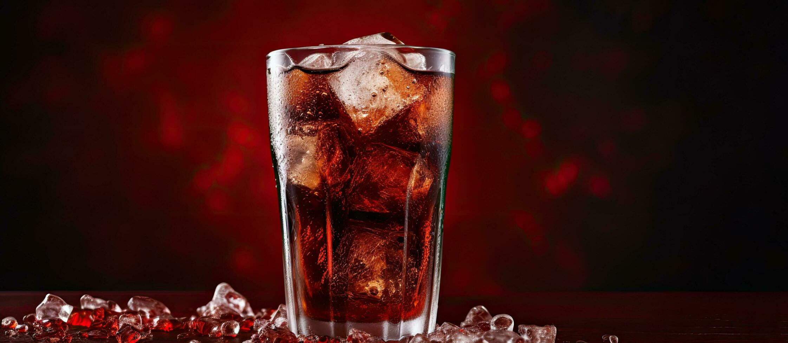

Home ||
About US ||
Contact ||
menu ||
Your Orders ||
Fast Food Items
Maggie
Maggie instant noodles are popular in Bangladesh, Our products are made to simplify dinner time while still inspiring exploration in the kitchen.
MAGGI isn’t a shortcut, it’s a detour to authentic flavors you may not have tried and recipes you thought were too hard to make
Pizza

The most distinct pizza in Canada is the "Canadian" pizza.
A "Canadian" pizza is usually prepared with tomato sauce, mozzarella cheese, pepperoni, mushrooms, and bacon.
Many variations of this pizza exist, but the two standout ingredients that make this pizza distinctly Canadian are bacon and mushrooms.
Pizzas in Canada are almost never served with "Canadian bacon", or "back bacon",
Burger

The grains and vegetables used in the patties are first washed and thoroughly cleaned to help ensure the removal of dirt, bacteria, chemical residues, and other materials that may be on the raw products.
This process can either be done by hand or through the use of machinery such as high-pressure sprayers.
With the use of a conveyor belt, the food is moved along under a high-pressure sprayer to remove the debris listed above.
Another method that may be used by companies is the use of a hollow drum which circulates the food while water is sprayed onto it to remove the debris.
Pasta

Pastas are divided into two broad categories: dried (Italian: pasta secca) and fresh (Italian: pasta fresca).
Most dried pasta is produced commercially via an extrusion process, although it can be produced at home.
Fresh pasta is traditionally produced by hand, sometimes with the aid of simple machines.
Fresh pastas available in grocery stores are produced commercially by large-scale machines
Soft Drinks
Coke
Coca-Cola, or Coke, is a carbonated soft drink with a cola flavor manufactured by the Coca-Cola Company.
In 2013, Coke products were sold in over 200 countries worldwide, with consumers drinking more than 1.8 billion company beverage servings each day.
Coca-Cola ranked No.
MountainDew
Mountain Dew, stylized as Mtn Dew in some countries, is a carbonated soft drink brand, produced and owned by PepsiCo.
The original formula was invented in 1940 by Tennessee beverage bottlers Barney and Ally Hartman. A revised formula was created by Bill Bridgforth[1] in 1958.
"Bill" Jones of the Tip Corporation further refined the formula, launching that version of Mountain Dew in 1961.
In August 1964, the Mountain Dew brand and production rights were acquired from Tip by the Pepsi-Cola company, and the distribution expanded across the United States and Canada
Deserts
Pancake
Food deserts are regions where people have limited access to healthful and affordable food.
This may be due to having a low income or having to travel farther to find healthful food options.
Pudding

Pudding is neither a solid nor a liquid, but a colloid. A colloid is a mixture of substances that are tangled together and do not separate.
Your pudding slime contains solid starch molecules (which help thicken the pudding) tangled up with liquid water molecules.
There are many types of pudding like caramel,blueberry etc..